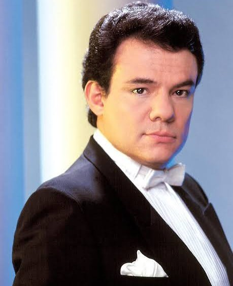

El Amar Y El Querer
Fue conocido como El Príncipe de la Canción, fue uno de los cantantes más importantes de la música romántica en el mundo. Su nombre real es José Rómulo Sosa Ortiz. Su música pertenece principalmente a la balada romántica y al pop latino.
